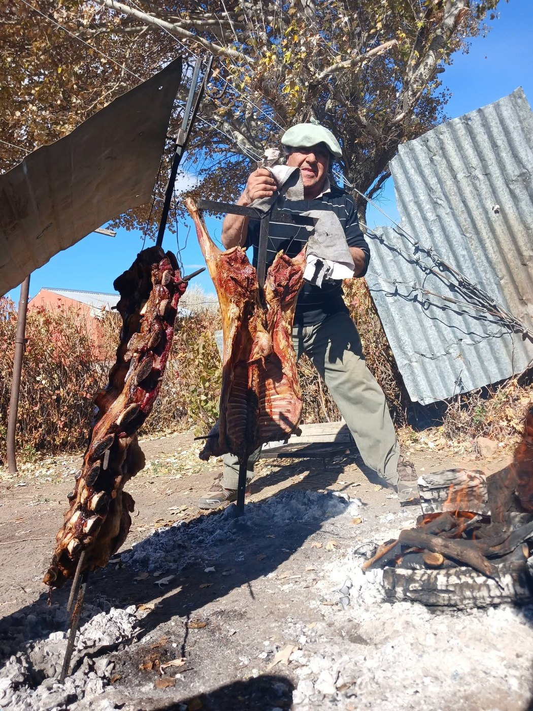
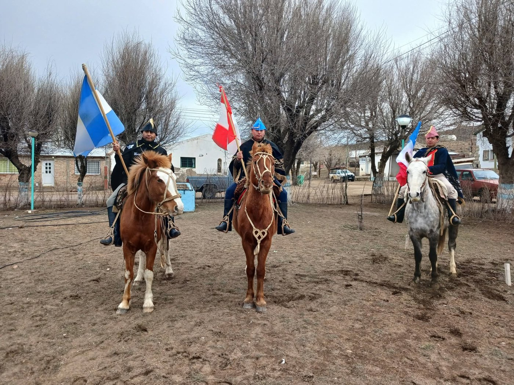

¿Qué se hace en tu pueblo cuando llega su aniversario?
Cada mes de noviembre se festeja el aniversario de nuestro pueblo, haciendo que se mantengan vivas nuestras tradiciones y costumbres gauchas.
El acto y el desfile
Comenzamos con un acto protocolar con palabras alusivas de autoridades y docentes, dando lugar a nuestras banderas. Luego, ellas son acompañadas en el desfile por caballos y habitantes del pueblo.
Almuerzo, doma y payadas
Para los invitados y los habitantes del pueblo, se los invita a compartir de un gran almuerzo popular. Luego se abren las puertas del campo de doma, donde podrán apreciar y disfrutar jineteadas con buenos reservados y destrezas con participantes de otros lugares; todo esto es acompañado por payadas realizadas por payadores muy conocidos.
Destrezas del aniversario de Mencué.
La noche: bingo, peña y bailanta
Llegada la noche se realiza el bingo con grandes premios, peña y un gran cierre con bailanta campera a cargo de grandes músicos.

